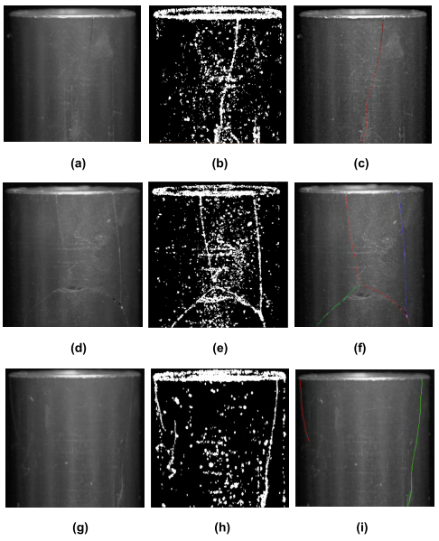
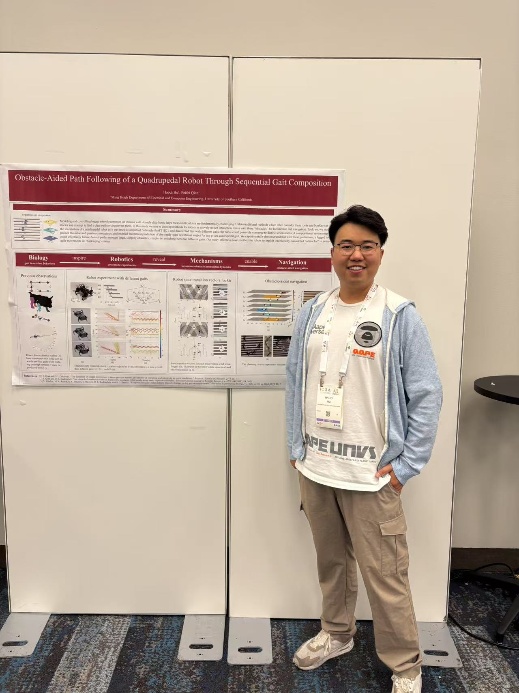

RL fine-tuning for VLA-based long-horizon task failure recovery.
VLA Models / RL Fine-Tuning / Mobile Manipulation
Haodi (Woody) Hu
Ph.D. graduate from the University of Southern California currently focused on vision-language-action models, reinforcement learning fine-tuning, and mobile manipulation for long-horizon task execution.
I am currently a Research Scientist Intern at MERL, where I work on RL fine-tuning for VLA models to improve failure recovery in long-horizon mobile manipulation tasks. My broader research grew out of USC RoboLAND and spans robot learning, embodied reasoning, granular loco-manipulation, and multi-robot coordination, where I worked with Professor Feifei Qian and collaborated with Professor Daniel Seita.
Accepted to CoRL 2025.
Long-horizon reasoning, recovery, and policy adaptation for embodied agents.

Research Direction
Advancing VLA-guided mobile manipulation with reinforcement learning
My current research emphasizes VLA models and RL fine-tuning for mobile manipulation, especially how embodied agents recover from failures and continue long-horizon tasks under uncertainty.
Core areas
Vision-Language-Action Models
Reinforcement Learning
Mobile Manipulation
Long-Horizon Recovery
Robot Learning
Embodied Reasoning
Policy Adaptation
Multi-Robot Systems
Recent Updates
News and momentum
Research Scientist Intern at MERL focusing on RL fine-tuning for VLA failure recovery in long-horizon tasks.
Paper accepted to the 9th Conference on Robot Learning: Granular Loco-manipulation.
Worked as a Machine Learning Engineer intern in the Data Science group at SanDisk.
Co-organized the 5th workshop on representations and manipulating deformable objects at ICRA 2025.
Presented research on legged robot loco-manipulation and obstacle-aided locomotion at ICRA 2025.
T-RO paper accepted on obstacle-aided trajectory control through sequential gait composition.
Selected Publications
Recent projects, papers, and videos
This section pulls together the strongest pieces from your current site and local materials, with better hierarchy and richer media previews for GitHub Pages.
Learning Granular Media Avalanche Behavior for Indirectly Manipulating Obstacles on a Granular Slope
A learning-based framework for predicting granular avalanche behavior to support indirect manipulation on sandy slopes.

Method for Detecting Micron Cracks on a Magnetic Rotor Surface Based on a Support Vector Machine
Teaching, Mentoring, and Service
Academic activities beyond publications
The new structure makes this material easier to scan than a long text block, while still preserving the substance from your current site.
Teaching experience
- Robot Mobility (EE599) — Teaching Assistant, Fall 2022
- A Computational Introduction to Deep Learning (EE541) — Teaching Assistant, Spring 2023, Fall 2023, Spring 2024
- MOS VLSI Circuit Design (EE477L) — Teaching Assistant, Fall 2024, Spring 2025
Awards and service
- USC Viterbi CURVE Mentor Award, 2022–2025
- USC Viterbi Ph.D. Student Fellowship Award, 2021
- NEFU Excellent Graduates Award, 2019
- Workshop co-organizer for ICRA 2025 deformable objects workshop
Mentoring
- Supervised students including Luke Cortez, Jerry Wu, Seojoon Kwon, Tian Xie, and Brendon Lee.
- Served as Ph.D. mentor in the USC CURVE program across multiple cohorts from 2022 to 2025.
- Supported student researchers through project mentorship and conference preparation.
